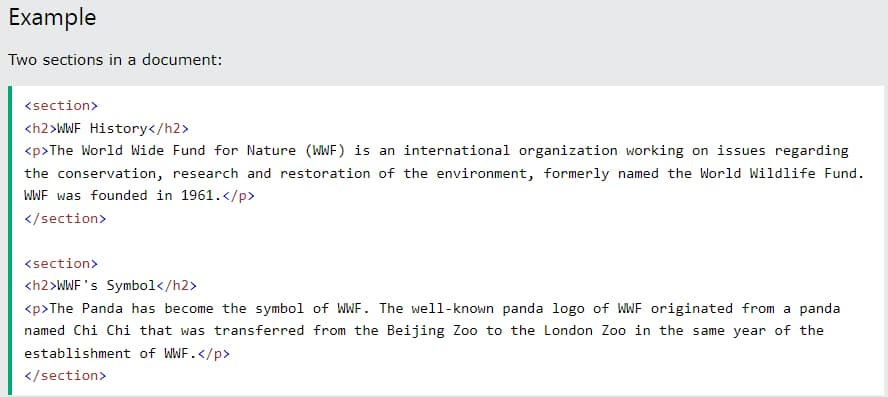
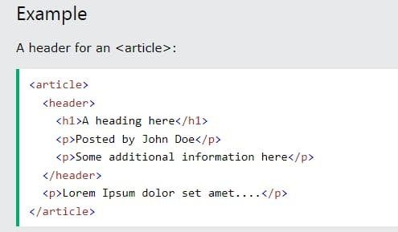
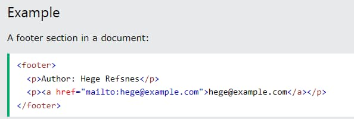

HTML5 Семантичні елементи
Семантичний елемент чітко описує його значення як для браузера, так і
для розробника.
Приклади не семантичних елементів: <div>і <<span>- нічого не говорить
про його вміст.
Приклади семантичних елементів: <form> <table> <article> чітко
визначає його зміст.
Підтримка браузерів
Семантичні елементи HTML5 підтримуються у всіх сучасних браузерах.
Крім того, ви можете "навчити" старих браузерів, як обробляти "невідомі
елементи".
Прочитайте про це в
підтримці браузера HTML5.
Нові семантичні елементи в HTML5
HTML5 пропонує нові семантичні елементи для визначення різних частин
веб-сторінки:
- <section>
- <article>
- <header>
- <footer>
HTML5 <section> елемент
Елемент
<section>визначає розділ в документі.
Згідно з документацією в3к'с HTML5: "розділ представляє собою
тематичну угруповання контенту, зазвичай з заголовком".
Домашня сторінка зазвичай може бути розділена на розділи для
ознайомлення, змісту і контактної інформації.

HTML5 <article> елемент
Елемент <article>визначає незалежний, автономний вміст.
Стаття повинна мати сенс самостійно, і вона повинна мати можливість
читати його незалежно від іншої частини веб-сайту.
Приклади того, де можна використовувати елемент <article>
- Повідомлення на форумі
- блозі
- Газетна стаття

HTML5 <header> елемент
Елемент <header>задає заголовок для документа або розділу.
Елемент <header>повинен використовуватися в якості контейнера для
вступного змісту.
В одному документі може бути кілька елементів <header>.
У наступному прикладі визначається заголовок для статті:

HTML5 <footer> елемент
Елемент <footer>вказує нижній колонтитул для документа або розділу.
Нижній колонтитул зазвичай містить автора документа, інформацію про
авторське право, посилання на умови використання, контактні дані і т.д.
В одному документі може бути кілька елементів <footer>.
